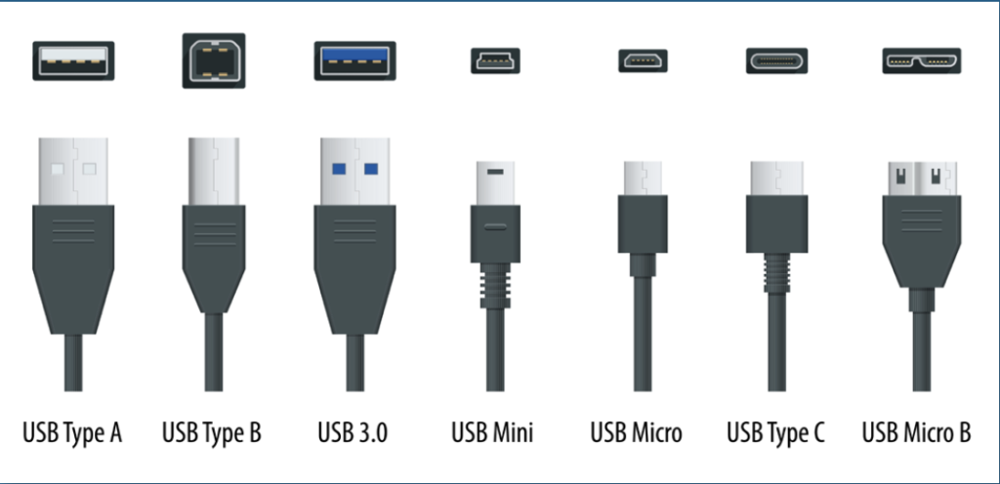

capitolo 2
indice
paragrafo 1: hardwer
L'hardware (abbreviato HW) è l'insieme di tutte le parti elettroniche, elettriche, meccaniche, magnetiche, ottiche,
che consentono il funzionamento di un computer o uno strumento simile, come ad esempio uno smartphone.
Il termine si riferisce a qualsiasi componente materiale di una periferica o di una apparecchiatura elettronica, comprese le strutture di rete;
l'insieme di questi componenti è anche detto componentistica.
l'archittettura Von Nuemann
L'architettura di Von Neumann è un modello di computer proposto nel 1945 dal matematico e fisico John von Neumann. È la base della maggior parte dei computer moderni.
Caratteristiche principali dell'architettura Von Neumann:
- Memoria unica.
- Programmi e dati sono memorizzati nella stessa memoria.
- Questo implica che istruzioni e dati usano lo stesso bus per essere trasferiti, causando a volte il collo di bottiglia di Von Neumann.
- Unità centrale di elaborazione (CPU). La CPU è composta da:
1. ALU (Arithmetic Logic Unit): esegue operazioni aritmetiche e logiche.
2. CU (Control Unit): controlla il flusso di dati tra CPU, memoria e dispositivi di input/output.
3. Registri: piccole memorie interne usate per operazioni temporanee.
i cavi
Un cavo elettrico è un componente elettrico che consiste in un insieme di più fili che agiscono
come conduttori elettrici, avvolti tra di loro e rivestiti da uno o più strati di materiale che funge da
isolante elettrico e protezione (gomma).
Esistono diverse tipologie di cavi, ognuna di queste è definita dalla quantità di fili (poli) che la compongono:
- 1 cavo = unipolare
- 2 cavi = bipolare
- 3 cavi = tripolare
- 4 cavi = quadripolare

le schede hardwer
Le schede hardware sono componenti elettronici che si installano all'interno di un computer o di altri
dispositivi per aggiungere o migliorare funzionalità specifiche.
Le schede hardware permettono di potenziare il computer aggiungendo nuove funzionalità:
- Schede madri: La scheda madre è la base su cui vengono montati tutti i componenti di un computer. Funziona come un "ponte"
che permette ai vari elementi di comunicare tra loro.
componenti:
processore;
RAM;
Slot PCIe = Permette di installare schede video, schede audio e altre schede di espansione.
- Schede video: La scheda video gestisce la grafica e le immagini sullo schermo. È fondamentale per il gaming e la progettazione 3D.
Tipi di schede video:
Integrata = È già inclusa nella CPU.
Dedicata = Una scheda separata con memoria RAM propria.
- Schede audio: Serve per migliorare la qualità del suono rispetto alla scheda integrata nella scheda madre.
Vantaggi di una scheda audio dedicata:
Migliore qualità del suono e meno rumore di fondo;
Maggiori opzioni per collegare cuffie e microfoni professionali.
- Schede di rete: Permette di collegare il computer a Internet o a una rete locale.
Tipi di schede di rete:
Scheda Ethernet = Connessione via cavo, più veloce e stabile;
Scheda Wi-Fi = Connessione senza fili, utile se non puoi usare il cavo Ethernet;
Scheda Bluetooth = Alcune schede Wi-Fi includono anche il Bluetooth.
le periferiche
Le periferiche sono dispositivi hardware che permettono di interagire con un computer. Si dividono in tre categorie principali:
Periferiche di input: servono per inserire dati e comandi nel computer.
Esempi: tastiera, mouse, scanner, microfono, webcam, joystick.
Periferiche di output: servono per ricevere informazioni dal computer.
Esempi: monitor, stampante, casse audio, proiettore.
Periferiche di input-output: permettono sia di inserire che ricevere dati.
Esempi: touchscreen, stampante multifunzione (che stampa e scansiona), hard disk esterno, chiavetta USB, scheda audio.
paragrafo 2: softwer
Il software è l'insieme dei componenti immateriali e virtuali che consentono ad una persona di eseguire operazioni. Bisogna distinguere
il software di base (chiamato sistema operativo) dal software applicativo (chiamato programma o applicazione): il software di base serve
per rendere operativo l'elaboratore, Il software applicativo serve per eseguire nuove funzioni o rendere operative parti dell'elaboratore.
- Microsoft Excel
- Microsoft Word
- Posta elettronica
- Microsoft Paint
il firmware
Il firmware è un tipo di software che è integrato direttamente nell'hardware di un dispositivo elettronico. È responsabile del controllo
e del funzionamento di base del dispositivo, fungendo da intermediario tra l'hardware e il software applicativo.
Caratteristiche del firmware:
- Memorizzato in ROM – Non può essere modificato facilmente dall'utente;
- Gestisce le funzioni essenziali dell'hardware – Senza firmware, molti dispositivi non potrebbero nemmeno accendersi;
- Aggiornabile in alcuni casi – Alcuni dispositivi permettono aggiornamenti firmware per migliorare le prestazioni o correggere bug.
Esempi di dispositivi con firmware:
Smartphone (firmware della scheda madre e dei componenti)
Router Wi-Fi
Stampanti
Televisori
Schede madri dei PC
l'accensione del computer
inizia il boots strap, il procedimento che portera´ all´accensione del computer.
durante il boots strap il bios (che sta nella ROM) prende il sistema operativo dal disco fisso (memoria di massa)
e lo mette in esecuzione nel processore.
il bios
Il BIOS collega specifici dispositivi hardware al software e fornisce istruzioni al computer
su come eseguire delle funzioni di base come il controllo della tastiera.
Il BIOS identifica e configura l'hardware del computer come il disco fisso, la CPU, la scheda video, la RAM e i dispositivi collegati.
Il bios è il primo programma che viene eseguito dopo l'accensione, coinvolto nella fase di avvio del sistema di elaborazione.
il sistema operativo
il processore
l'interfaccia
L'interfaccia e' il punto di contatto tra un computer e la persona, o tra due componenti del computer. L'interfaccia grafica utente (graphical user
interface, GUI) è ciò che rappresenta gli oggetti al programma in una forma grafica direttamente modificabile
dalla persona, per esempio presentare lo schermo come una scrivania su cui sono attivi menu, finestre e icone.
le applicazioni
Le applicazioni delle app si riferiscono ai vari utilizzi e funzionalità che le app (applicazioni software) possono avere nei diversi contesti.
Ogni app è progettata per svolgere una determinata funzione o rispondere a un bisogno specifico.
Tipologie di applicazioni delle app:
- Comunicazione e Social Media:
- messaggistica
- social network
- videoconferenze
- Intrattenimento e Streaming:
- film e serie TV
- musica
- video e streaming live
- Produttività e Lavoro:
- documenti e fogli di calcolo
- gestione progetti
- appunti e organizzazione
- Shopping e E-commerce:
- acquisti online
- abbigliamento
- cibo a domicilio
- Finanza e pagamenti:
- pagamenti digitali
- banche online
torna all'inizio